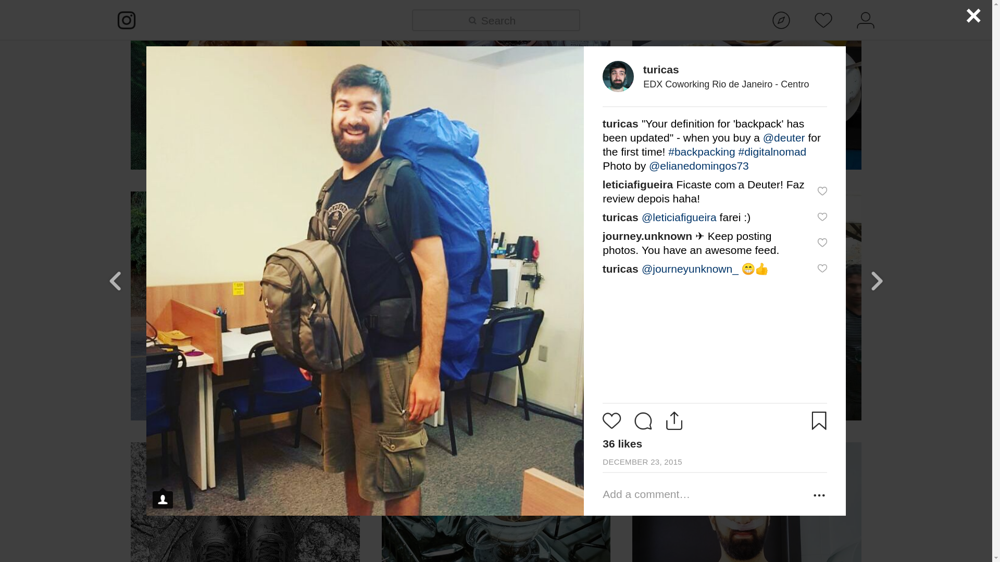

Acessibilidade de Dados Abertos no Brasil
Turicas aka Álvaro Justen
Dados Abertos e Data Science - Grupy-SP
13 de dezembro de 2018 - São Paulo/SP
$ whoami
Turicas, prazer! =)
Sigam-me os bons:
{twitter,
github,
youtube,
slideshare,
instagram,
telegram}
/turicas
turicas@brasil.io

escoladedados.org

impacto.jor.br
Brasil.IO
O Brasil em dados libertos
Software Livre & Python
Desde 2004/2005

Dados Abertos
“ Dados abertos são dados que podem ser livremente usados, reutilizados e redistribuídos por qualquer pessoa - sujeitos, no máximo, à exigência de atribuição da fonte e compartilhamento pelas mesmas regras. ”-- OpenData Handbook (definição de Open Definition)
Mais detalhes:
Controle Social
“ De acordo com o governo brasileiro, o controle social é a participação da sociedade civil nos processos de planejamento, acompanhamento, monitoramento e avaliação das ações da gestão pública e na execução das políticas e programas públicos. ”-- Wikipedia
Inovação Cívica - Exemplo
Operação Serenata de Amor

serenata.ai
Funil de Dados (Data Pipeline)

schoolofdata.org/methodology
Nem sempre o dado está disponível
twitter.com/turicas/status/1049346826355335169

vitimasdaintolerancia.org
Nem sempre o dado está disponível [2]
twitter.com/turicas/status/1019272233095745537
Data Pipeline
schoolofdata.org/methodology
Minha história com dados públicos
Maior parte do tempo dos projetos de análise de dados:

Trabalhando com Dados Públicos


“ Restringir acesso a dados públicos é elitizar a democracia. ”-- Manifesto Brasil.IO

balneabilidade.inema.ba.gov.br
t.me/addstickers/ddj-stickeados
rows convert arquivo.pdf arquivo.csv


github/turicas/balneabilidade-bahia
twitter.com/turicas/status/943176715672711168

twitter.com/turicas/status/959120200976224262
twitter.com/turicas/status/960678777096425472
Brasil.IO
O Brasil em dados libertos


github/turicas/brasil.io

Leia a matéria

Acesse a matéria

Acesse a matéria

Acesse a matéria

eleicoes.poder360.com.br
perfilpolitico.serenata.ai
transparenciapartidaria.org
coda.escoladedados.org
23 e 24 de novembro de 2019São Paulo/SP

Cerveja com Dados (meetup.com)

t.me/python_pr

pythonsul.org
PythonSul 2019 em Curitiba